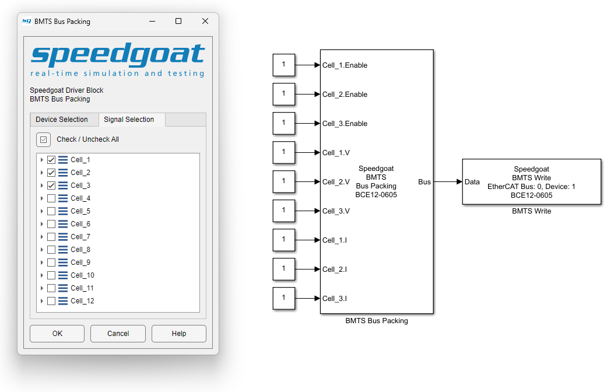

TSE Usage Notes
TSE Usage Notes — Usage information about the Temperature Sensor Emulator
Overview
![[Note]](images/note.png) | Note |
|---|---|
This documentation refers to the Speedgoat Battery Management Testing Systems (BMTS) that are supported with MATLAB R2022a and later. |
The BMTS driver block library allows users to configure and operate the Battery Cell Emulator (BCE), Fault Insertion Unit (FIU), and Temperature Sensor Emulator (TSE) with a Speedgoat real-time target machine. These usage notes cover additional topics about using the BMTS driver blocks with the TSE. For hardware-related topics, such as setup and safety instructions, please refer to the respective documents provided with each product.
Bus Signal Structure
The BMTS Read and BMTS Write blocks use Simulink bus signals as in-/outputs. The structure of the bus signal depends on the configured device.
The Simulink Bus structures are allocated in the MATLAB base workspace, once the parameters for the BMTS Setup, BMTS Read and BMTS Write blocks have been defined. The bus structure for each TSE device depends on the number of channels present in the device.
The bus structure to set the values of a 4-channel TSE device is called TSE_4Ch_Set and is as follows:
- TSE_4Ch_Set
TSE_Ch1, TSE_Ch2, […], TSE_Ch4
Resistance: Set the resistance of the TSE channel. Data type: double
The Resistance signal is of type double and can range from 0 to 8039940, indicating the desired resistance in Ohm.
To set a TSE channel to the open circuit fault state, set the Resistance signal to -1.
To set a TSE channel to the short circuit fault state, set the Resistance signal to -2.
The bus structure to receive data from a 4-channel TSE device is called TSE_4Ch_Get and is as follows:
- TSE_4Ch_Get
TSE_Ch1, TSE_Ch2, […], TSE_Ch4
Status: Provides status information about the TSE channel. Data type: single
The Status signal is of type single and indicates the resistance set at the channel output. The value may deviate slightly from the required resistance value (±0.1% ± 500mΩ) and will depend on the factory-calibrated measurement values of the resistor ladder for each channel.
A Status signal value of -1 indicates that the interlock is inactive, or that an error occurred.
Assigning Bus Signals
There are various ways to handle bus signals in Simulink. One option is to use the BMTS Bus Pack block block; this workflow is explained below. For other workflows, please refer to the MathWorks documentation.
Insert a BMTS Bus Pack block and connect it to the BMTS Write block. In the block mask of the BMTS Bus Pack block, select the correct BMTS device type from the dropdown menu. The corresponding Simulink Bus object is automatically allocated in the MATLAB base workspace.
By default, input ports are created for all signals inside the bus. To select only a subset of signals and reduce the number of input ports, use the tree view on the Signal Selection tab of the block mask.
